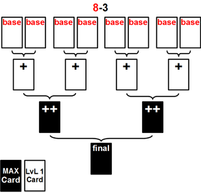

Evolving
Contents
Description[edit]
Evolving is the process where two cards are combined together to create an entirely new card. This new card is more powerful, and inherits a portion of the Attack and Defense of the previous cards. Nearly all cards can be evolved up to four times, and can be used in tandem with Enhancing to increase a card's growth even further.
- The card, before it has been evolved, is called the base card (1st form). The higher evolution forms/stages get plus signs behind the name: card+ (2nd form), card++ (3rd form) and []card (4th form). For cards, that have more than four evolution forms counting looks like this: card, card+, card++, card+3, card+4,...(Example: Mana Reader Mina).
- On a card's lower right corner, there are four orbs. Each orb represents one form, and will be filled up based upon the cards form.
- When a card is fully evolved, it is also given an increase to its Rarity by one level (Example: Goblin has a Normal rarity, but its final form will become the High Normal [Imp] Goblin).
- After evolving, the cards Maturity and Skill-level is reduced to lvl 1.
- The new card is generally a reversed version of the previous card with a few graphical changes. However, this card is considered to be an entirely new card, and counts towards your Archive total.
How to evolve[edit]
In order to evolve a card, a few requirements must be met:
- You must have two cards with the same name, thus from the same evo tree. Example: Goblin+ with Goblin can evolve to Goblin++.
- You must have enough Rupies to pay for the evolving cost.
- The second card must be of an equal or lower Stage than the first card. Example: You can evolve a Goblin+ with a Goblin, but not the other way around.
- Click the Evolve button at the bottom menu or on "My Page".
- Choose a card to evolve. It will be evolved to the next form.
- Choose a evolver card. It will be sacrificed.
- Click on "evolve" and watch a quick little scene.
Costs[edit]
The evolution costs depend on the rarity and the level of the 2 cards, which are combined. It can be calculated this way:
evo costs = rarity_A + rarity_B + 50*lvl_A + 25*lvl_B
- The card you want to evolve is card A. The card you consume for the evolution is card B.
- lvl_A and lvl_B are the card levels.
- rarity_A and rarity_B are the rarities of card A and card B
| Rarity | rarity_A or _B |
|---|---|
| Normal | 250 |
| High normal | 500 |
| Rare | 1000 |
| High Rare | 1500 |
Example:
Luci+ (HR) lvl 50 combined with Luci (Rare) lvl1:
Costs = rarity_A + rarity_B + 50*lvl_A + 25*lvl_B = 2000 + 1000 + 50*50 + 25*1 = 5525 rupies
Atk/def increase[edit]
When you check your Archive cards, you may notice, that there is a system, how the atk and def values (called "stats") increase from the 1st form to the higher forms. It is a fixed multiplier to the base card, which determines the evolved cards stats:
base = base card+ = base * 1.2 card++ = base * 1.4 []card = base * 1.8
Example: Atk of Goblin. base = 440 card+ = 440 * 1.2 = 528 card++ = 440 * 1.4 = 616 []card = 440 * 1.8 = 792
Caution: These muliplier doesn't apply to Referral Cards like Valkyrie Hild, because they change their PWR and rarity on every evolving stage.
When you evolve the cards yourself, you will notice, that the atk/def stats are higher than in your Archive. The reason for this is, that when you evolve a card, it gets 5% or 10% of the stats from the 2 cards used in the evolving process. 5% when the card is not max enhanced and 10% for max enhanced cards. Thus, when you evolve card1 with card2 to card3, the stats of the new card3 will be:
card3 = base * multiplier + card1 * (5% or 10%) + card2 * (5% or 10%)
Example: Evolve a lvl 1 Goblin with a max enhanced Goblin to a Goblin+
- lvl 1 Goblin atk = 440. 5% of the card stats are transfered, because it is lvl 1.
- MAX enhanced Goblin atk = 1100. 10% of the card stats are transfered, because it is max enhanced.
- multiplier for Goblin+ = 1.2
Goblin+ = 440 * 1.2 + 440 * 0.05 + 1100 * 0.1 = 528 + 22 + 110 = 660
Evolving strategies[edit]
To create a strong fully evolved card with high atk and def stats, you have to pay attention to how you evolve your card to the final form. It depends on the number of base cards combined, how those base cards are combined and whether the cards are max enhanced during the evolution process.
Due to the various ways a card can be evolved, there are a number of strategies that have come into existence to describe the best ways to create strong cards. These strategies are generally labeled by how many base cards are used to create a card, and how many cards are max enhanced. Example: 6 base cards are used and 7 specific (!!) cards are max enhanced is called a 6-7 evo. It is important to note, that you can not simply max enhance any 7 cards of the evolution tree. There are specific cards, that have to be enhanced, to gain the full potential out of 6 base cards with 7 max enhances! The Chapter MAX enhancing certain cards explains this further.
Actually three different namings for those strategies exist, which mean the same. One of them is the japanese naming, which talks about "Pairs" of cards to explain the evolution trees. It is not used in our international version. We only carried over the 4max, 6max and 8max naming for strategies where every card is max enhanced. The other two namings are the new and old namings, which are currently used in our version. The only difference between them is, that in the new naming the max enhancement of the final form is counted towards the number of enhancements. Thus the old 6-6 evo is the same as the new 6-7 evo. The wiki will make use of the new naming to be consistent. In the following tables, you can see a comparism between the different namings:
| Japanese | old | new |
|---|---|---|
| 4 strike | 4-0 | 4-1 |
| 4 straight | 4-2 | 4-3 |
| 4-4 | 4-5 | |
| 4 full / 4 max | 4-6 | 4-7 |
| Japanese | old | new |
|---|---|---|
| 6 strike | 6-0 | 6-1 |
| 6 straight | 6-2 | 6-3 |
| 6-6 | 6-7 | |
| 6 full / 6 max | 6-10 | 6-11 |
| Japanese | old | new |
|---|---|---|
| 8 strike | 8-0 | 8-1 |
| 8 straight | 8-2 | 8-3 |
| 8-6 | 8-7 | |
| 8 full / 8 max | 8-14 | 8-15 |
Base cards used[edit]
You can use a minimum of 4 and a maximum of 8 base cards to evolve your card to the final form (4th form). There is only one way to combine 4 or 8 base cards to a final form card. But there multiple ways for 5, 6 or 7 base cards. The best way for every number of base cards is shown in the following pictures:
| 8 base cards: | 7 base cards: | 6 base cards: |
|---|---|---|
| 5 base cards: | 4 base cards: | |

MAX enhancing certain cards[edit]
As already mentioned, 10% of a max enhanced card is transfered to the evolved card, while without max enhancing it is only 5%. Thus there is no point in enhancing a card only halfheartedly. When you enhance it, enhance it to MAX, to get the 10% bonus.
Now you have to choose which cards you want to enhance to get the most out of it. That can be explained with the 4 base card evolution displayed in the picture below (Obviously, max enhancing the final form is a MUST).
- When you look at the picture, you see that the card++ (1) and base (2) are in the last evolving step before the final form. Because of that they will give 5% or 10% of their card stats directly to the final form. Max enhancing those 2 cards has the biggest effect (Tier 3 cards).
- In the row above that, you see the card+ (3) and base (4) (Tier 2 cards). Max Enhancing them, doesn't give as much bonus atk/def to the final form card, as the Tier 3 cards give. Why? Example: lets assume no cards are max enhanced: The card+ (3) and base (4) will give 5% to the card++ (1), but only 5% of those 5% are transfered to the final form. That means only 5%*5% = 0.25% from the Tier 2 cards are transfered to the final form.
- That becomes even worse for the cards, which are furthest from the final form: the two base cards (5) and (6) (Tier 1 cards). In the case of the example, where no cards are max enhanced, it means, that from those base cards (5) and (6) only 5%*5%*5% = 0,0125% is transfered to the final form. Thus their impact is very low.
- Summary: The closer the cards are to the final form, the bigger is their impact on the final form stats. Thus max enhancing those is more important than max enhancing cards further away in the evo-tree.
Example: Atk of Goblin final form with 4 base cards evo:
- 4-3 evo: 2249 (95.70%) (Tier 3 is max enhanced)
- 4-5 evo: 2269 (96.55%) (Tier 3,2 is max enhanced)
- 4-7 evo: 2270 (96.60%) (Tier 3,2,1 is max enhanced)
- You see, the difference between 4-5 and 4-7 is only 1 atk!
Comparing evos[edit]
The evolution strategy with the highest atk and def final form is the 8-15 evo, thus its potential is 100%. Now it is possible to compare the strength of the different evolution strategies by using the 100% of 8-15 as reference. Every other evo is weaker, consequently their value is below 100%. For example the 4-7 evo final card has 96.629% of the atk/def of the 8-15 evo. That means, when the 8-15 has 1000 atk, the 4-7 has 1000*96.629% = 966 atk (rounded). The table below is showing the atk/def for every good evo pattern compared to the 8-15 evo. As a reminder: First number is number of base cards, second number is number of max enhances before and including final form.
Caution: Those % are absolutely accurate for the 8max, 7max, 6max etc. evos, but not for the other evos, where not all cards are max enhanced. The percentages may differ for cards, where the difference between lvl 1 and max base cards stats is not exactly a factor of 2.5. The evo tables on the wiki card pages take this into account!
8-15: 100.00% 8-14: 99.963% 8-13: 99.925% 7-13: 99.813% 8-12: 99.888% 7-12: 99.775% 8-11: 99.850% 7-11: 99.738% 6-11: 99.625% 8-10: 99.813% 7-10: 99.700% 6-10: 99.588% 8-9: 99.775% 7-9: 99.663% 6-9: 99.551% 5-9: 98.502% 8-8: 99.738% 7-8: 99.625% 6-8: 99.513% 5-8: 98.464% 8-7: 99.700% 7-7: 99.588% 6-7: 99.476% 5-7: 98.427% 4-7: 96.629% 8-6: 99.251% 7-6: 99.213% 6-6: 99.101% 5-6: 98.052% 4-6: 96.592% 8-5: 98.783% 7-5: 98.764% 6-5: 98.727% 5-5: 97.678% 4-5: 96.554% 8-4: 98.333% 7-4: 98.296% 6-4: 98.277% 5-4: 97.303% 4-4: 96.180% 8-3: 97.865% 7-3: 97.846% 6-3: 97.809% 5-3: 96.854% 4-3: 95.730% 8-2: 92.509% 7-2: 92.491% 6-2: 92.453% 5-2: 92.266% 4-2: 91.985% 8-1: 87.135% 7-1: 87.116% 6-1: 87.116% 5-1: 86.910% 4-1: 86.629%
Four Cards[edit]
The 4 base card evolutions are used for cards with higher rarity (High Rare and up), because these cards can cost a lot. The final form cards created this way are weaker than evolutions where more base cards are used (For example a 5-3 is already stronger than a 4-7). The 4-0, where you dont max enhance any card, is useful to increase your Archive to be able to carry more cards, while 4-4, where you essentially max enhance one of each evolution, is useful to increase your Archive to be able to lower recharge time. In addition to that 4-0 is the way to go to create Normal Feeders.
- Evolve 2 base cards to a card+
- Evolve the card+ with a 3rd base card to a card++
- Evolve the card++ with a 4th base card to the final form
- The images below show you, which cards have to be max enhanced for the different evo strategies.
4-1 |
4-3 |
4-5 |
4-7 |
Five Cards[edit]
The 5 base card evolutions are stronger than the 4 base card evolutions but not very common. People usually go for 4, 6 or 8 cards evolutions.
- Evolve 2 base cards to a card+
- Evolve the card+ with a 3rd base card to a card++
- Evolve the 4th and 5th base card to another card+
- Evolve the card++ with the card+ to the final form
- The images below show you, which cards have to be max enhanced for the different evo strategies.
5-1 |
5-3 |
5-7 |
5-9 |
Six Cards[edit]
The 6 base card evolution is a very common evolution. The 6-7 evo has already ~99.5 % of the power of a perfect 8-15 evo, despite the fact that it is much cheaper. The 6 card evolutions are used when people want to get the max potential of their High Rares and up cards (6-7 or 6-11) for a reasonable price. In the case of Rare cards you should go for a 6-3 instead, because rare cards are cheap, but enhancing many stages is not worth it, as evolved Rares have a low resell value.
- Evolve 2 base cards to a card+
- Evolve the card+ with a 3rd base card to a card++
- Now repeat this process, to get another card++
- Evolve 2 card++ to the final form
- The images below show you, which cards have to be max enhanced for the different evo strategies.
6-1 |
6-3 |
6-7 |
6-11 |
Seven Cards[edit]
The 7 base card evolutions are stronger than the 6 base card evolutions but not very common, because people rather go for a 6 card evo because they are more cost effective or they go all out for a perfect 8-15 card.
- Evolve 6 base cards to 3 card+
- Evolve 2 card+ to a card++
- Evolve the remaining card+ with a base card to card++
- Evolve both card++ to the final form
- The images below show you, which cards have to be max enhanced for the different evo strategies.
7-1 |
7-3 |
7-7 |
7-13 |
Eight Cards[edit]
The 8 base card evolutions are the most powerful evolutions possible. But they are only for perfectionists and not worth the costs, because the difference between a 6-11 and a 8-15 is less than a half percent.
- Evolve 8 base cards to 4 card+
- Evolve 4 card+ to 2 card++
- Evolve both card++ to the final form
- The images below show you, which cards have to be max enhanced for the different evo strategies.
8-1 |
8-3 |
8-7 |
8-15 |
|  |
Custom Strategies[edit]
Due to the flexibility of the evolution system, any of the above strategies can be altered to fit a player's requirements.
For example, if a player doesn't have enough resources for the entire "6-11" strategy, but more than enough for a "6-7" strategy, a player is able to adapt the "6-11" strategy for their own use, usually by selecting certain cards to not enhance.
While it may be possible to list every single example of a custom build, it is highly impractical. Instead, an easy way to visualize a custom build is to take one of the above strategies, and simply not enhance lower tier cards of a players choosing.
Statistics on "properly" evolved cards[edit]
This is mainly of use for players who are buying a partially evolved card (i.e. a CARD+ or CARD++) and want to make sure that it has been MAXED out in the previous stages.
For every card, the Att/Def stats on the evolved card relative to the BASE STATS have a fixed multiplier. That is, the stats you see on a clean, lv 1, unevolved card determine what the stats are on the various evolved forms of the card using almost exactly the same formula for EVERY card. There are some variations those can be up to 10% or even more for certain cards!
- MAX = 2.50
- 2-2 = 1.70
- 2-3 = 3.50
- 3-4 = 2.00
- 3-5 = 4.10
- 4-6 = 2.45
- 4-7 = 5.16
- 6-10 = 2.62
- 6-11 = 5.32
I have gathered no statistics for a proper 4-way CARD++ (i.e. made by combining a 2-3 CARD+ with another 2-3 CARD+) or for 8-14 and 8-15 evos. However, it should be easy to tell these using the above multipliers as they must be better than the 3-card proper evos and 6-card final form evos respectively.
Example 1: Principality
- Base: 3200/2880
- Principality MAX: 8000 / 7190
- Proper Principality+ (lv 1): 5440 / 4894
- Proper Principality+ (MAX): 11200/10066
- Proper 3-card Principality++ (lv 1): 6400 / 5758
- Proper 3-card Principality++ (MAX): 13120 / 11792
- Proper 4-card [Ruler]Principality (lv 1): stats not available
- Proper 4-card [Ruler]Principality (MAX): 16512 / 14840
- Proper 6-card [Ruler]Principality (lv 1): 8384 / 7544
- Proper 6-card [Ruler]Principality (MAX): 17024 / 15302
People can confirm these independently, but if you get out a calculator and divide all of the attack numbers by 3200 and all of the def numbers by 2880, you will see that the evo stats are all very close, or exactly equal to the multipliers listed above.
Example 2: Thor
Base: 4150 / 3100
- Thor MAX: 10380/ 7740
- Proper Thor+ (lv 1): 7056 / 5628
- Proper Thor+ (MAX): 14352 / 10836
- Proper 3-card Thor++ (lv 1): 8302 / 6198
- Proper 3-card Thor++ (MAX): 17024 / 12694
- Proper 4-card [God of Thunder]Thor (lv 1): 10211 / 7624
- Proper 4-card [God of Thunder]Thor (MAX): 21425 / 15976
I apologize that these examples are only for GODS cards but from limited information about proper evo DEMON and MAN cards, it seems there is no difference across realms.
WARNING:
These multipliers above are applicable to SOME cards, due to card definitions. Cards scale the same , but the max to base ratio varies and will require different ratios. If you use the maxed first form of a card as reference there won't be any issues.
The best way to determine the final evos is to multiply the stats of the maxed first form card by 2.136 to get the stats of the 8-15 evo (will having rounding errors). Then scale by the ratios above to get other final form evo stats.
Ex. Principality
- Principality 1. form (base): lvl1: 3200/2880 MAX: 8000 / 7190
- Principality final form (8-15): Max x 2.136 = 17088 / 15358 => (8-15) is 100%
- Principality final form (6-11): 99.625% (see above table) of (8-15)
- Principality final form (6-11): (6-11) = (8-15) * 99.625% = 17088/15358 * 0.99625 = 17024/15300